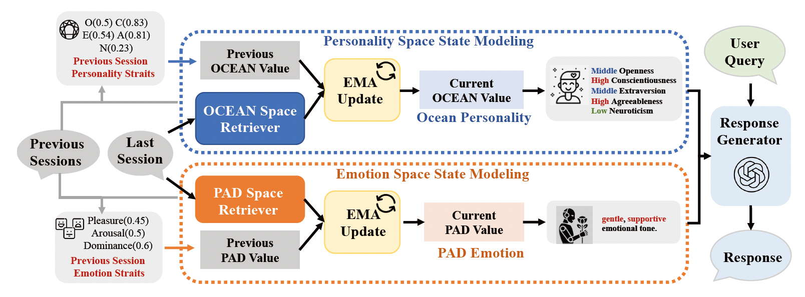
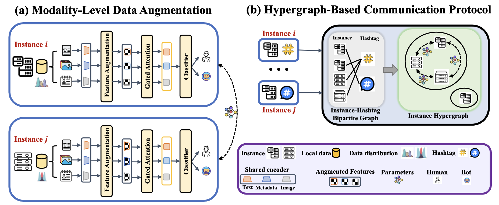
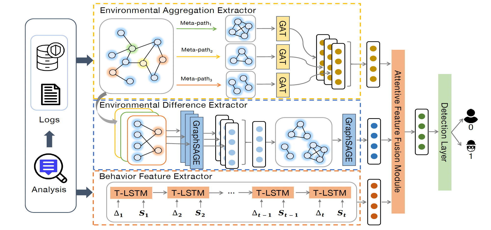
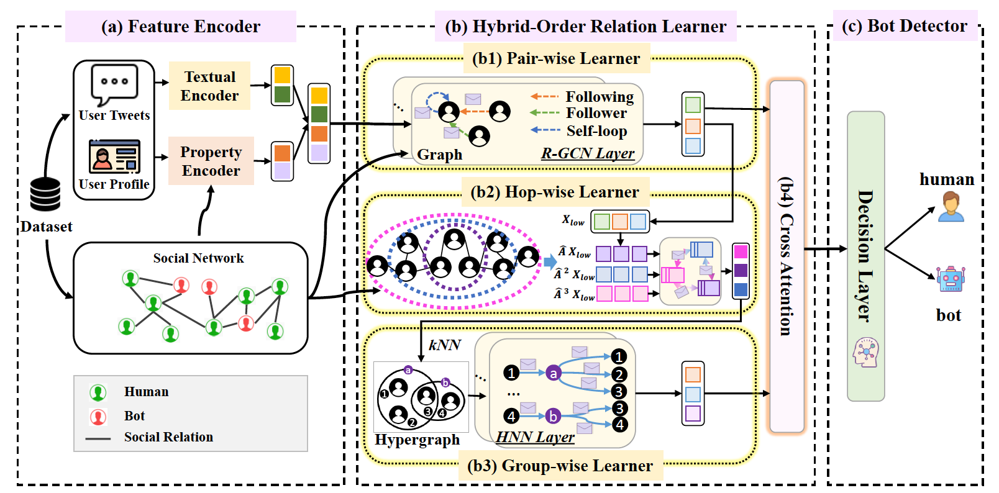
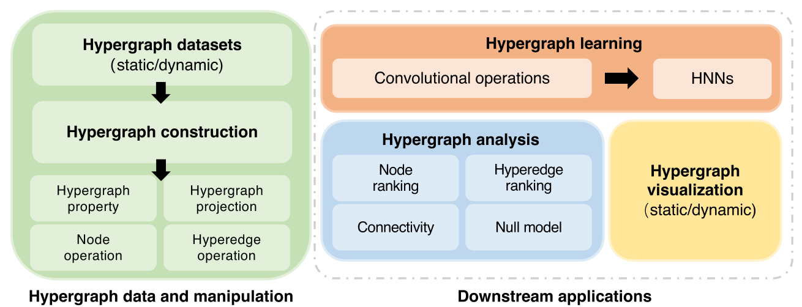
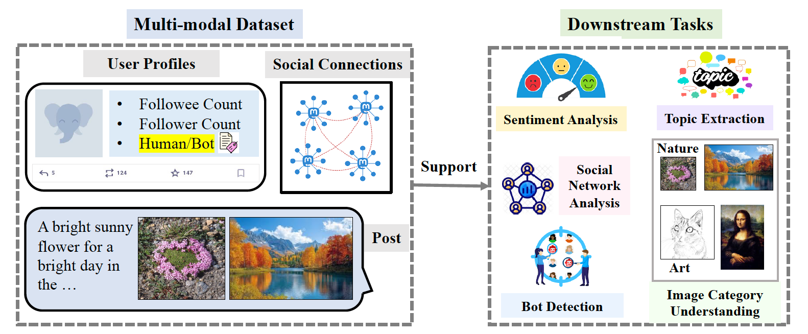
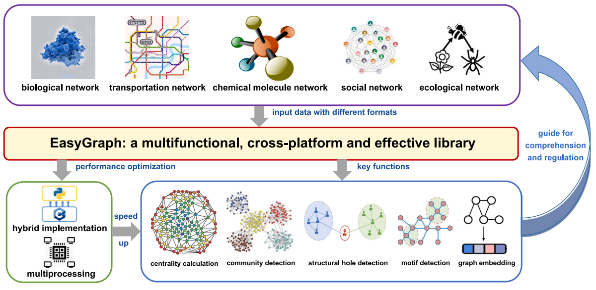

Paper
2026
Beyond Retrieval: Incorporating Personality and Emotion into RAG-Based Conversational Agents
Proc. of ICSC (Oral, Best Paper Award)

I am a Lecturer in the School of Information Science and Engineering at East China University of Science and Technology. I received my Ph.D. degree from the College of Computer Science and Artificial Intelligence, Fudan University, advised by Prof. Yang Chen and Prof. Xin Wang. I received my M.S. degree from Fujian Normal University, advised by Prof. Li Xu, and my B.S. degree from Anshan Normal University.
My research interests include data mining, graph/hypergraph learning, and graph for LLMs. My recent work focuses on effective learning methods for complex graph and hypergraph data, with an emphasis on multimodal representation learning that unifies relational, textual, and behavioral evidence. The work is driven by problems of trust, safety, and behavior modeling on online platforms, and sits at the intersection of network science and computational social science. As human-machine societies become the norm, I am increasingly drawn to AI safety: models that remain robust, accountable, and interpretable when humans and autonomous agents populate the same ecosystem.
Alongside method development, I build and release open-source toolkits and benchmark datasets (e.g., EasyGraph, our higher-order network library EasyHypergraph, and FediData) so that these evaluations stay reproducible for the community.
💌 I am always actively looking for highly motivated students. Please email me your CV if you are interested in!

Proc. of ICSC (Oral, Best Paper Award)

Proc. of WWW (Oral)

IEEE Transactions on Network Science and Engineering (TNSE)

Proc. of CIKM

Humanities and Social Sciences Communications (Nature Portfolio)

Proc. of CIKM (Resource Track)

Frontiers of Information Technology & Electronic Engineering (FITEE)

Patterns (Cell Press)
